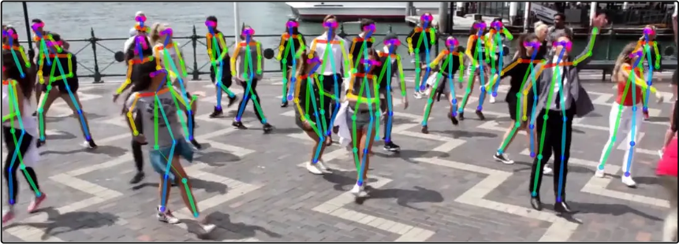
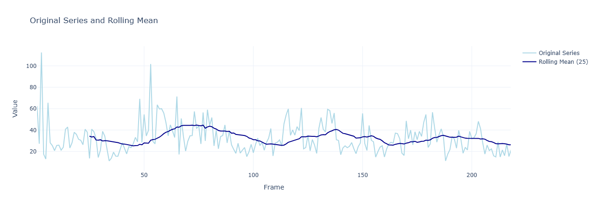

Crowdstream
Synthesized Co-Creation of Music with AI + Audience

Sensing the Audience
Crowdstream reads signals from audience movements and emotions, interpreting body language and facial cues to gauge energy and sentiment in real time.


Generating Music
AI tools generate or remix music dynamically based on audience input and environmental cues, creating an adaptive and expressive musical experience.
Audience as Composer
Listeners aren’t just passive — their presence, reactions, and inputs help shape the music. Crowdstream treats the audience as co-creators in the artistic process.
System Overview
Demo: live dj-like stems mix from an external source
A real-time music mixing engine that combines stems from different songs sections (intro, verse, chorus).